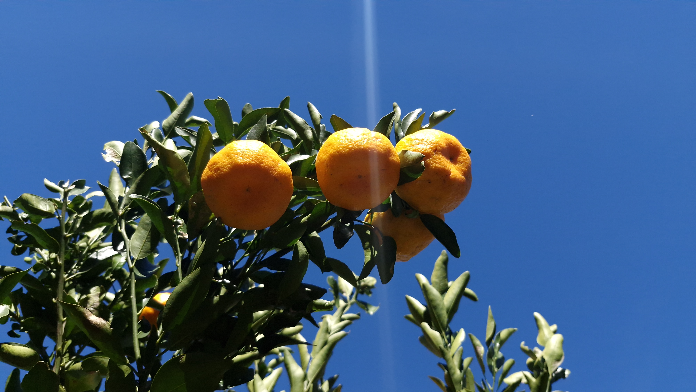

Tem o aroma que encanta e o sabor que une gerações. Mas será tudo a mesma fruta?
Descubra como a tangerina — em suas diversas variedades, especialmente a Ponkan — fortalece a agricultura familiar no Paraná, impulsiona o cooperativismo e promove um futuro sustentável no campo. Da terra acidentada de Pinhão às mesas de todo o Brasil.

Tangerina: Citrus reticulata
Antes de entender o poder econômico e social da fruta, vale conhecer quem ela é — do ponto de vista científico.
Classificação científica
O epíteto reticulata faz referência à rede de fibras que entremeia os gomos — aquela pelezinha branca que separa cada segmento da polpa.
Uma fruta, muitos nomes
No sul do Brasil, ela é chamada de bergamota. No resto do país, tangerina. As variedades mais conhecidas — Ponkan, Murcott (morgote), Mexerica, Mimosa — são todas pertencentes ao gênero Citrus, família Rutaceae, e compartilham as mesmas características botânicas essenciais: casca facilmente destacável, frutos com segmentos bem definidos e aroma cítrico característico.
Originária da Ásia, a tangerina chegou ao Brasil adaptando-se bem ao clima subtropical do Sul e às condições de altitude do interior paranaense. Hoje, é a fruta que mais identifica o pequeno produtor rural do Paraná.
A citricultura tem força no Paraná
O volume de tangerina produzido pelos agricultores paranaenses representa 10,9% do total nacional. O estado integra o grupo dos maiores produtores do país, ao lado de São Paulo (30,9%), Minas Gerais (28%) e Rio Grande do Sul (15,4%).
Produção nacional de tangerina — participação por estado
Cerro Azul — Capital Nacional da Ponkan
A apenas 90 km de Curitiba, no Vale do Ribeira, está o município de Cerro Azul, reconhecido como a maior produtora de Ponkan do Brasil. A produção da cidade ilustra o potencial da citricultura paranaense: frutas destinadas ao consumo in natura, vendidas para merenda escolar municipal e para mercados locais e regionais.
O terroir da tangerina no interior paranaense
Em Pinhão, a natureza criou as condições ideais. O trabalho humano fez o resto.
🌡️ Clima e relevo favoráveis
O relevo acidentado e a alta amplitude térmica — alternância marcante entre calor e frio — de Pinhão criam um microclima que favorece o desenvolvimento da tangerina. O estresse climático controlado faz com que a fruta concentre açúcares, desenvolvendo doçura acentuada, suculência e coloração alaranjada intensa — características valorizadas pelos consumidores e pelo mercado.
🌱 Programa municipal de fruticultura
O município conta com um programa estruturado para fortalecer a fruticultura familiar. Pequenos agricultores passam por avaliação técnica de aptidão para o cultivo da tangerina Ponkan e, ao ingressar no programa, recebem:
- Mudas certificadas e selecionadas com 50% de subsídio
- Treinamentos com técnicos da Secretaria Municipal de Agricultura
- Assistência técnica periódica ao longo do ciclo de produção
A iniciativa fortalece a cadeia produtiva local, garantindo que o pequeno produtor tenha acesso a tecnologia, suporte e mercado — pilares essenciais para a viabilidade da agricultura familiar.
🏡 Adaptação à pequena propriedade
A tangerina se adapta bem ao modelo das pequenas propriedades rurais, característico de Pinhão e de grande parte do interior paranaense. Diferentemente de culturas que exigem grande escala para ser viáveis, a citricultura familiar permite ao produtor iniciar com poucos hectares e expandir gradualmente, assegurando renda estável ao longo dos anos.
A associação fortalece o pequeno produtor
O associativismo e o cooperativismo são ferramentas importantes no campo. Trabalhando em associações rurais, produtores que compartilham os mesmos interesses e necessidades ganham acesso a conhecimento, mercados e políticas públicas que, individualmente, dificilmente alcançariam.
"Sozinho, o agricultor pode ir mais rápido. Juntos, os agricultores vão mais longe — e chegam em lugares que nenhum deles chegaria sozinho."
Por que se associar?
O associativismo amplia a troca de experiências entre produtores, facilita o trabalho dos técnicos da assistência rural — que passam a atender mais famílias de forma organizada — e eleva a competitividade coletiva no mercado. A escala conjunta permite negociar melhores preços por insumos, acessar programas institucionais como o PNAE (merenda escolar) e o PAA, e até alcançar certificações que abrem portas para exportação.
Principais variedades consumidas no Brasil e no Paraná
Cada nome tem sua história e sabor único. Conheça as estrelas dos pomares paranaenses.
🏅 A Ponkan — rainha dos pomares paranaenses
A Ponkan (Citrus reticulata var. Ponkan) é a variedade mais cultivada no Paraná e uma das mais consumidas no Brasil. De casca grossa e fácil de descascar, com sabor superdoce e perfume inconfundível, ela domina os mercados locais e encanta gerações de consumidores. No estado, destacam-se seleções como Ponkan IAC, Ponkan Gigante e a tradicional Ponkan comum — cada uma com características adaptadas ao clima e ao solo paranaenses.
Em Pinhão, a Ponkan encontrou no relevo acidentado e na amplitude térmica local as condições ideais para expressar todo o seu potencial: frutos graúdos, alaranjados, doces e suculentos — prontos para a mesa ou para a merenda escolar.
Etapas da produção da tangerina
Do preparo do solo até a sua mesa, cada passo exige cuidado, conhecimento técnico e dedicação do agricultor. Quando solo e clima são propícios, a tangerina já produz seus primeiros frutos a partir do 2.º ano após o plantio, atingindo o pico no 10.º ano — com potencial de 250 kg por planta ao ano.
🌿 Tratos culturais: o cuidado que faz a diferença
Entre o plantio e a colheita, uma série de práticas — chamadas tratos culturais — garante que a planta se desenvolva saudável, produtiva e sustentável. Em Pinhão, os técnicos da Secretaria de Agricultura orientam os produtores associados em cada uma dessas etapas:
Agro forte, futuro sustentável
Equilíbrio entre produção e meio ambiente é a base para que as próximas gerações continuem colhendo os frutos da terra. A citricultura familiar, quando aliada ao associativismo e à assistência técnica qualificada, é um exemplo vivo desse equilíbrio.
🌱 Defensivos orgânicos e biológicos
O manejo fitossanitário em Pinhão prioriza o uso de defensivos orgânicos e biológicos, reduzindo a carga química sobre o solo, as nascentes e a biodiversidade local. O controle biológico de pragas como a mosca-das-frutas é técnica ensinada nas capacitações da Secretaria de Agricultura.
♻️ Adubação orgânica integrada
A aplicação combinada de fertilizantes orgânicos (como compostos e estercos) com insumos minerais — conforme análise de solo — reduz o desperdício, melhora a estrutura do terreno e garante nutrição equilibrada à planta em cada fase do ciclo.
🌍 Pequenas propriedades, grande impacto
A agricultura familiar de base agroecológica preserva matas ciliares, polinizadores e qualidade da água. Pequenos pomares bem manejados produzem mais por hectare com menor impacto ambiental — provando que produção e natureza podem caminhar juntas.
Técnico de Agropecuária, formado e pós-graduado em Gestão Ambiental
Marcos Szumilo
Este site foi elaborado com a colaboração e a supervisão de um técnico em agropecuária, que atua na Secretaria de Agricultura. Graças ao seu trabalho, as associações permanecem informadas e formalizadas.